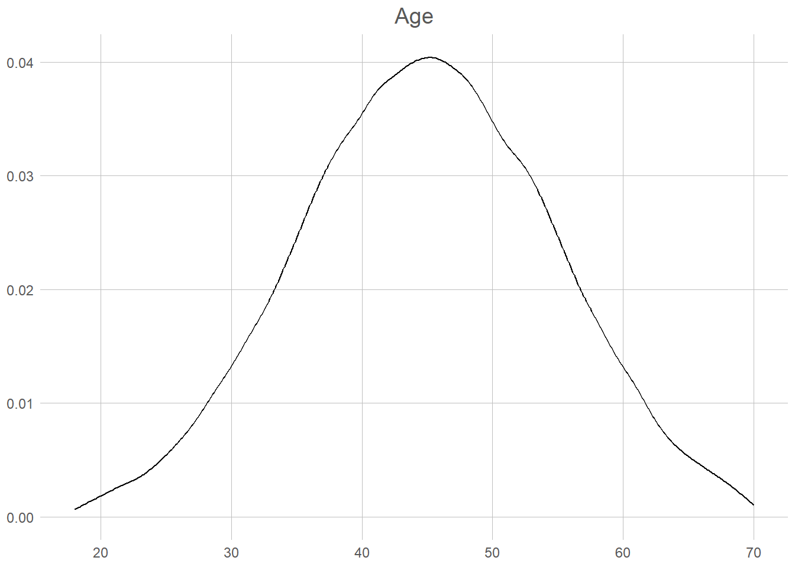

Statistical inference
Political Science, be it qualitative studies of the bureaucracy or playing numbers with Great Power conflicts, have on common goal: to observe, and from that understand, politics.1 To do this then (in the way we learned when discussing descriptive statistics) it should be clear that we must first observe all of the political life. If you do not know the intention of every voter, how can you attempt at predicting an election? Unfortunately as scientists we rarely, if ever, have the option of observing all that which we would like to understand. At best we may hope to see a small slice of the world, a sample, and hope that it represents that which we are hoping to understand. This idea – of going from a small sample of the world – to a knowable yet uncertain description of the real world is what we call statistical inference. In this chapter we shall look firstly at what a sample is, how we can make it representative, and finally how that can be turned into (uncertain) decisions.
A not so small world
For this chapter we will utilise some (invented) voter data to see how we can describe the world. Lets first take a look at out whole sample. In total we have 100 000 voters, from 18 to 70 year old, with roughly 50/50 men and women. Seeing all of these we can take a quick look at the true state of the world.


The data we have here is of course not unobservable. Indeed, if we choose to see out goal of prediction not as individual votes but as the election-result, this is directly and universally observable every 4th year. What we want to achieve, is to observe this also between election, usually through the use of phone-surveys and similar. This surveys attempts at creating a random sample. Lets start at non-random sample of 30 voters.
This shows the voting patterns of men over 50 for the first 100 rows of our data. Now, before looking more at the results here we need to go through some important rules!
Firstly, we only, only, care about the population. If someone ever says that 25 % of the sample is something, you should immediately react in horror as nobody ever cares about the sample. Actually, if you write about what happens in the sample this is now your whole population and you have observed all of it! Congratulations, you are no longer uncertain about anything and can just state the correct answer. You no longer need statistics.
Secondly, you should always give an answer.2 That answer of course should be based on the data you have available, and the best you can make from it. Sometimes you may say to yourself: “Well this is awful data! I only have men over 50, and not even a percent of them! Certainly I’m so uncertain I couldn’t say whether they vote at all!” Well that’s terribly unfortunate. Luckily, statistics gives us the tools to say how uncertain we are.
Lets look back at our sample. How many people (in Norway, not in our sample) do we believe vote for the Liberals (V)? Well, the number says 25 % so that’s our answer. Now, is that correct? In other words, if we had access to the whole population, is this what we should expect? Seems highly unlikely. Ok, so how uncertain are we about our results then? Ok, don’t hate me, but I lied. Sort of, in this sample we aren’t able to say how uncertain we are3. Here we will look at two simple rules to get a good sample. Firstly, the law of large numbers, and secondly an i.i.d. randoms ample.
Law of Large Numbers
The law of large numbers (LLN) is quite straightforward. For our purpose we can define it something like this: “As the number of draws from a sample increases the sample-average should converge to the population-average.” If you would like a more stringent definition you may prefer:
\[ \lim _{n\to \infty }\sum _{i=1}^{n}{\frac {X_{i}}{n}}={\overline {X}} \]
Now, how can this help us in finding out election results? Lets go back to attempting to find the percentage of the voters who prefer the Liberals. Imaging that we draw one sample from the population. In this case the sample-average will be quite easy to imagine; either it is 1, we found a liberal-voter, or it is 0, we found any other voter. If we draw 2 samples, we might find that it is either 100, 50, or 0 % depending on who we ask. To find the true answer (which where around 18 %) we would need a minimum of 50 people, 9 of them being liberal-voters4.
This plot shows the moving percentage of liberal voters as we draw more and more people from our population5. The first couple of draws are visibly incredibly wrong (both going towards 0 and up to nearly 50 %). It is also unstable, moving up and down as a drunken roller-coaster. Look, however, what starts to happen at round one thousand draws and is nearly complete at 4 000. The line at that point nearly stops moving at 18.42. That is 0.02 percent of the true value of 18,4 %. Remember, this is 5 000 draws from a population of 100 000, and still not a random sample. This is specifically just the first five thousand. To look more closely at the process, when taking the mean of 1000 draws we get 19.3 %, and the final after 5 000 is 18.42 %, a change of 0.88 %.
OK, so you’re not yet happy? Five thousand is a lot of calling to do (you do remember that our example is phone-surveys?), and of course it could be that the first 5K where only far-right mensheviks. So, what can we do to make you happy. The most important way to solve this issue of having to draw an immense amount of data, is to utilise what is known as random sampling.
Random sampling
So far, it is of course I, the grandiose author, who has written this text. This may of course for you the dear reader seem rather random. I suppose that you would have not thought any of it had it been any other author who had written the text. Let us no for a moment imagine that we we picked a completely other person, with a slightly better language, to explain random sampling and i.i.d. to you. What could (though, of course, not necessarily had to) be the result?
Ah, random sampling, a marvelous tool in the vast and perplexing galaxy of statistics. Picture this: You’re on a quest to find out the percentage of voters who prefer the Liberals, but calling every sentient being in the population sounds as daunting as trying to navigate an asteroid field blindfolded. Fear not, dear hitchhiker! Random sampling comes to the rescue, offering a way to select a representative subset without losing your sanity.
Random sampling is like waving a magical wand over the population, bestowing an equal chance upon each individual to be chosen. It’s the universe’s way of saying, “Hey, everyone gets a shot at being part of the party!” So, whether you’re a Vogon, a Betelgeusian, or a humble Earthling, you all have an equal opportunity to be plucked from the crowd. It’s democracy in action, statistical style!
Now, let’s journey deeper into the realms of “identically independently distributed” or i.i.d. In this vast cosmic carnival of statistical inference, we assume that our data behaves in a predictable and fair manner. Identically means that each observation is like a cosmic sibling, drawn from the same celestial gene pool. They share the same traits, quirks, and voting preferences. It’s like a cosmic family reunion, but without the awkward arguments over interstellar politics.
Independently is the watchword of the universe. It means that each data point has no influence over its fellow companions. They dance to their own cosmic beat, oblivious to the others’ moves. It’s like a synchronized swimming performance, but with each swimmer following their own unique routine. They might be part of the same watery ensemble, but they’re free to do their own aquatic acrobatics.
Lastly, distributed. Ah, the grand cosmic tapestry of probability distributions! It’s like a vast intergalactic marketplace where values are bought and sold. Assuming our observations are identically independently distributed means they all come from the same celestial bazaar. They’re samples from the same galactic bargain bin, each value having an equal chance of being plucked out. It’s a level playing field where even a humble Earthling has a shot at galactic greatness!
By embracing random sampling and assuming the i.i.d. cosmic dance, we unlock the secrets of the universe. We can analyze our celestial sample and extract insights that hold true for the entire population. It’s like unraveling the mysteries of the cosmos, but with data instead of telescopes.
So, dear hitchhiker, armed with random sampling and the i.i.d. principle, you can boldly explore the statistical wonders of the galaxy. With a touch of randomness and the harmony of independence, you’ll uncover celestial truths and bring statistical enlightenment to the universe. Just remember your towel and never panic in the face of p-values!
Some might argue that it’s not entirely random who I stole the style from. To them I simply say that I hope your house will be turned into a motorway. Let us now try this new style of sampling, we draw 1000 respondents from our population, this time completely at random.

So, what did the Liberals get at this attempt? 18.4 %. So the exact same result as when we drew five thousand voters, but with a fifth of the phone calls. Quite amazing isn’t it? Now, our last question then is really what we began with. How uncertain are we of our results?
Uncertainty!
So let me begin by telling you a secret. I chose a 100 000 voters because it’s a big round number. It has actually nothing of interest to us. Remember how I said that the only thing we care about is the population? Ok, that’s my 4th lie. At this point we’re going to care about the sample. Now here is a third, and final, rule. “The uncertainty of a statistic from a random sample is only dependent on the sample size.” Not the size of the population. Not the amount of variance. Not how much facebook commentators seems to disprove of the results. If a thousand random respondents is enough in Norway with 3,8 million voters, it’s enough in India with 912 million voters. You want proof? Your dad don’t buy my claim that with a thousand people I can tell you the worlds most popular basketball-player? The proof can be seen in this little formula showing the standard error of the proportion6. P here means the proportion, and n the number of respondents.
\[
\sqrt{\frac{\hat{p}(1-\hat{p})}n}
\]
As is immediately visible (and really, should be expected) as the number of respondents increase the standard-error decrease. Should you somehow manage to get an infinite number of respondents, the error would be 0. One way of doing this would be to add some simple error bars to our marvellous plot. This is rather simple. Let’s first calculate the confidence interval for each of our parties. We’ll here use a 95 % confidence interval, which means that if we calculate an infinite amount of these intervals, 95 % of the time the true proportion will be within said interval. Bit confusing, but lets just use that as our uncertainty for now. To get that number we first calculate the standard error for each party, multiply this with 1.967, withdraw that from our percentage to get the lower limit and add it to get the upper.
What is then the conclusion? Well, the Liberals seems to have 18.5% of the votes, +/- 1.23 percentage points.
And thus, we reach the underwhelming conclusion of our statistical escapade. With t-values, standard errors, and sampling errors in our cosmic toolkit, we venture forth armed with a sense of mild statistical satisfaction. While statistics may not provide the grand cosmic revelations we yearn for, it offers a humble glimpse into the patterns and uncertainties of our data-driven universe. So, dear hitchhiker, go forth with a gentle shrug of statistical acceptance, for even in the face of underwhelming conclusions, statistics continues to shed a flickering light on the mysteries that surround us.
So long, and thanks for all the fish!\(\exists n \in \mathbb{Z}^+, (n > 41 \land \neg \exists m \in \mathbb{Z}^+, (m > 41 \land m \neq n))\)
Footnotes
Define that as you self please.↩︎
At least in this course that is. In reality the uncertainty may get so high that “I ain’t got the slightest clue” may be a reasonable answer.↩︎
Ok, so that’s a lie too. There are ways to find the uncertainty on non-random samples. The people over at the mathematics faculty are probably more than willing to explain it to you.↩︎
Assuming that you want an integer-number of voters. If you allow for any real-number amount of voters you may of course choose whatever values you would like.↩︎
You may ask yourself; “But if we want to prove that we will reach the actual mean, why stop at 5K draws and not finish the 100k?” Cause my computer is slow, and it’s correct enough. Now stop asking annoying questions.↩︎
Note that there exists loads of different standard errors. Here we use the one for proportions because, well you know, we’re working with proportions.↩︎
So where did I get 1.96 from? The t-value as it is called shows how many standard-deviances a number is from the mean. If a number is 1.96 away from the mean of t-distributed distribution, 95 % of the values will be within them. Confusing? Absolutely.↩︎